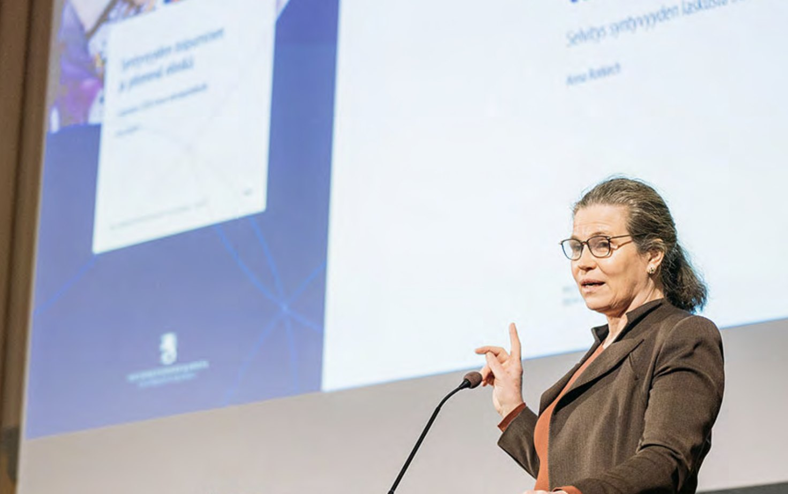

Talks

I give lectures and policy briefings on fertility decline, family relations and population policy. Invitations: anna.rotkirch@vaestoliitto.fi.
Upcoming
Keynote, Future of Family Dynamics, University of Southern Denmark, Odense, 11 March 2027.
Keynotes and talks
Did smartphones accelerate fertility decline? Plenary keynote, EHBEA 2026 Annual Conference, European Human Behaviour and Evolution Association, Pesthuis, Leiden University, Leiden, Netherlands. Event page
Family-friendly policies for the 21st century. Keynote, Annual Conference of the Population Association of Taiwan, 2026.
Fertility desires in the digital era. Invited lecture, National Yang Ming Chiao Tung University, School of Medicine, International Health Program, 2026.
Nordic fertility decline: drivers and policy challenges. Plenary talk, Nordic Welfare Forum 2025, Nordic Welfare Centre, plenary "Reproductive agency and social trust in the Nordics", Helsinki. Event page
TikTok baby bust? How screens accelerated fertility decline. Invited talk, fertility seminar, University of Chicago, 2025.
Childbearing cues in low fertility settings. Invited talk, Family well-being and life course events, San Giobbe Economics Campus, Venice, 2025.
"I think about it all the time": childbearing cues in low fertility societies. Keynote, Wittgenstein Centre Conference 2024, Vienna. Event page · Recording
Fertility resilience during crises. Seminar talk, LSHTM, MARCH Centre and Population Studies Group seminar series, London, 2024. Event page · Recording
Global fertility rates are declining rapidly — why, and what to do? Invited speaker, Storm Capital Markets Day, Hotel Intercontinental, Oslo, 2024.
Everything everywhere all at once. Invited speaker, Investment and Pensions Europe, Prague, 3 December 2024.
What could European family formation policies look like? Invited talk, session "Is demography losing its foresight capacity for policymaking in Europe?", European Population Conference, Edinburgh, 2024.
Do social networks reflect population ageing in Europe? Invited talk, Bocconi University, Milan, 2024.
Social networks and wellbeing in Europe. Evolutionary Anthropology seminar, invited talk, University College London, 2024.
Panels and policy events
Launch of the Parent Fund Initiative (Vauvasampo parent fund proposal: research and modelling, with Venla Berg), Väestöliitto. In Finnish. Event page
When populations shrink — should states encourage births or adapt? IUSSP Debate, online. Argued the "yes" side, which eventually won the vote narrowly: "A future with children". Event page · Recording
Europe, how are we doing? An analysis of wellbeing and close social networks. The Future of Our Living Together dialogue series, Population Europe, 30 September 2025.
Reproductive futures: shifting the limits of late fertility? Public panel, Wittgenstein Centre Conference 2024, Vienna, with Jacky Boivin, Erich Griessler, Marlene Hager and Lucy van de Wiel. Recording
Low fertility: what policy interventions might work (better)? Tuesday Dialogue series of the Einstein Center Population Diversity, Population Europe, 2023.
For conference organisers
Short biography (about 50 words), free to use:
Anna Rotkirch is Research Professor and Research Director at the Population Research Institute of Väestöliitto, the Family Federation of Finland. She studies fertility decline, family relations and social networks, served as demographic rapporteur to the Finnish Government in 2020–21 and 2024, and has published over 200 research articles and 20 books.
Photographs for programmes and announcements:
- Colour, outdoors (JPEG, 957 × 597 px). No credit required.
- Black and white portrait (JPEG, 2400 × 3596 px). Credit: © Charlie Bibby for the FT.
{kind=link}
{kind=link}